- 周末 FSD V15 发布之后，这两天大家看了很多视频，下午相互对了一下各自的信息，有一些共识性的结论，管中窥豹看一下 FSD V15 的改进和实现方式。
- 这个文章更加着重于框架设计和实现层，表现层可以自己去 YouTube 看。
本文纯属个人意见，仅作记录和参考，如有雷同纯属意外；如果读者有不同意见，那一定是读者对；如果碰巧实现跟某些公司的方案相同，纯属运气。
一次外部的管中窥豹
V15 改了什么
- 视觉编码器升级，Musk 称其为 Universal Vision Encoder（UVE），并在 FSD、Robotaxi、Optimus 之间共用；
- Reality View 用生成式新视角替代旧的可视化管线；
- Musk 提到 3B 动作模型 + 1B 渲染模型、18 Hz 特征、36 fps 目标。
通用大模型预训练决定驾驶能力
- V15 把通用视觉-语言模型（Vision-Language Model，VLM）预训练、VLA（Vision-Language-Action）预训练和车端蒸馏部署连成一条线。
- 通用大模型预训练决定了 V15 的驾驶能力；
- 它的意义不在“驾驶专用 pretrain 又加了几个任务”，而在通用大模型能力向车端的迁移。
V15 发了什么
驾驶网络的升级
- 新视觉编码器；
- 路牌、小动物、路面杂物、铁链、坑洼、深积水识别改进；
- 学区/恶劣天气速度控制；
- 测速摄像头前减速；
- 自行车架模式；
- DMS 支持帽子/墨镜；
- 导航与泊车路线学习。
- 官方称关键干预率提升 25 倍（发布说明报道），但这个口径需要第三方数据验证。
车机上的生成式实景
从车顶虚拟相机实时生成周围世界；不是摄像头回放，也不是游戏引擎贴图；官方称是“novel view synthesis”，由同一个端到端驾驶模型在开车的同时渲染。支持点击目标点、全屏/分屏。
新视觉编码器“用数百万条互联网视频训练”，并在 FSD、Robotaxi、Optimus 之间共用。通用大模型预训练决定了 V15 的驾驶能力。
从 V14 到云到端
V14 采用预训练 → SFT → 后训练三个阶段。三者属于同一个模型，不是三个独立模型。

V14 面对的“维度灾难”
- 按特斯拉在 ICCV 2025 / CVPR 2026 的公开口径（CVPR 2026 演讲整理）：7 路摄像头 × 36 Hz × 500 万像素；
- 原始 clip 90 秒以上，训练裁到约 12 秒，按 5×5 像素 patch 折算，输入约 20 亿 token；
- 再加上导航、100 Hz 运动学、48 kHz 音频。
- 输出只有 2 个 token：转向和加速度。
- 端到端要学的，是 20 亿 → 2 的因果映射。
因此 V14 在中间塞入大量“可解释信号”：3D 占据与流、车辆/行人/骑行者、交通灯与标志、道路边界与车道、限速、交互概率，以及自然语言推理。它们既是监督，也是安全审查的抓手。
V14 的 compact token
- V14 的 compact token 包含两部分：implicit scene token（隐式场景）和 some explicit instance token（显式实例，如车、VRU、交通灯、车道）。
- Trajectory head 通过 cross-attention 与这些 token 交互，输出多模态轨迹。
它为什么有效
显式实例可解释、易监督、易做安全规则；SFT 把人类驾驶的“价值判断”压进策略；post-train 用 RL/闭环修 reward。三者各司其职。
它的代价
实例列表是有损的：它把场景表达成实例集合，非实例语义会丢失；scene token 在重建中是无损的。
- V14 留下的是“中间监督”这条路：让黑箱在输出动作之前，先输出一堆可被检查的东西。
- V14's real legacy is intermediate supervision, not a particular head.
V15 换了接口：实例列表 → 4D 场景 token，预测下一帧 → 渲染新视角，三段式 → 通用预训练 + 蒸馏部署。
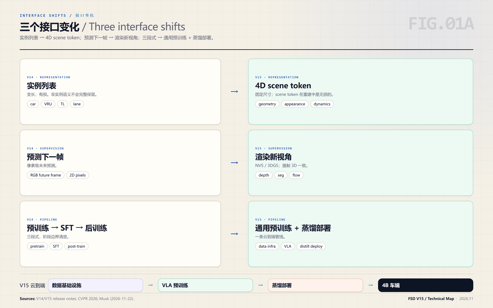
单独看这条管线：VLM 预训练 → VLA 预训练 → 蒸馏部署
这条管线分三步。
- 数据基础设施 / VLM 预训练（云）：互联网视频 + 大量自动驾驶数据 + 仿真。Grok 的训练数据规模很大，并加入了大量自动驾驶数据；这与 OpenAI 把 robotics team 重组进 agent 以整合数据类似。Universal Vision Encoder（UVE）属于 Grok 体系，并经过多级蒸馏后上车。
- VLA 预训练：VLA 是 Vision-Language-Action，把视觉/语言接到动作，包含 multi-modal trajectory prediction、agent prediction 等 planner 子任务。这一层决定通用能力能不能变成驾驶行为。
- 蒸馏部署（车端）：把云端教师压成 4B 车端图（约 3B 动作 + 约 1B 渲染），再做量化、剪枝、算子融合和 AI4 部署。蒸馏和部署是同一个环节，不是“先蒸馏、再部署”两件事。
一个编码器，两条解码路径
V15 架构：Universal Vision Encoder（UVE）共享，约 3B 动作模型 + 约 1B 渲染模型，18 Hz（Musk）。
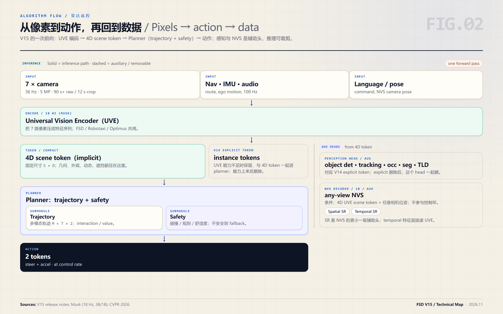
- 前向结构：Forward input → UVE → tokenizer → 训练四大任务集；
- 推理只保留 trajectory + lightweight NVS。
- 3B 动作模型与 1B 渲染模型都由 UVE 蒸馏得到。

UVE：Universal Vision Encoder，通用的“视觉节拍”
- UVE（Universal Vision Encoder）以 18 Hz（Musk） 输出特征序列，FSD、Robotaxi、Optimus 共用同一个编码器。
- 它用数百万条互联网视频做通用视觉预训练，再在车队数据上对齐驾驶。
- 编码器因此不只对“驾驶相关物体”敏感，也对通用世界（材质、光照、动物、杂物、遮挡）敏感。
蒸馏：动作模型与渲染模型如何共享 UVE
- 3B 动作模型和 1B 渲染模型由 Universal Vision Encoder（UVE）蒸馏得到，共享同一份 4D scene token。
- 渲染器用这份场景表征条件生成新视角，渲染损失反传回 UVE，迫使特征同时满足两件事：
- 对动作有判别力：该影响刹车的细节不能丢；
- 对渲染有一致性：遮挡、深度、动态、光照要能在新视角下自洽。
共享表征的价值不只是多一个输出，而是多一个约束。
1B 渲染器：conditional mean-flow 是什么
- 渲染器是一个 1B 的 conditional mean-flow 模型（mean-flow 是 flow matching 的变体，学习区间平均速度场）。
- 它以 4D UVE scene token 为条件，给定任意相机位姿（any view）渲染新视角。
- 所谓“上一帧”不是渲染器输出，而是上一帧 scene token 与当前帧 UVE 特征融合得到的 4D scene token；
- 模型在 token 空间预测变化量，再解码到当前视角。
调度上，Musk 提到目标 36 fps；渲染器按单帧或小 chunk 差分生成。
“½ TRIP”是一个 TRIP 加速器的一半，不是“半颗 AI4”。它吃的是剩余算力，不是主控制环的预算。
车端推理图：3B 动作 + 1B 渲染 = 4B
| 层级 | 规模 | 证据 | 说明 |
|---|---|---|---|
| 车端动作模型 | 3B | Musk 帖文 | 输出轨迹/控制，带辅助头。 |
| 车端渲染模型 | 1B | Musk 帖文 | NVS decoder，conditional mean-flow。 |
| 车端推理图合计 | 4B | 相加 | 3B + 1B = 4B。 |
不是驾驶专用预训练
V15 的变化不在“自动驾驶又多了几个预训练任务”，而在通用大模型（VLM）预训练：通用大模型预训练决定了 V15 的驾驶能力，并通过 VLA 预训练和蒸馏部署进入车端。
VLM 已经在云端做世界模型
- 视频生成、4D 场景生成、世界模型这些能力，在通用 VLM/视频模型里已经存在，并不是自动驾驶独有的新任务。
- 对自驾来说，更难的环节是把这些能力变成可车端部署、可闭环验证、可安全兜底的东西。
- 特斯拉如果做成了，价值不在“发明了 4D video”，而在“把通用模型的预训练能力接进了车端”。
VLA：视觉/语言到动作
VLA 把视觉/语言意图接到动作。在“通用预训练 → 车端蒸馏部署”的框架里，VLA 负责把共享表征变成 planner 的轨迹与动作。
Pretrain 拆掉 task prompt
FSD V15 的 pretrain 拆除了 genception 式的 task prompt。所有任务都作为默认任务一起训练，不再用 prompt 指定当前任务。
- 模型因此更 compact：没有 task prompt token，也没有按 prompt 切换的条件分支。
- 多层 DiT 始终在同一个任务分布上训练，不会因为 task prompt 变化发生大的 task distribution 移动。
一种可能是 FSD V15 去掉了 SFT，只使用 pretrain：预训练直接覆盖驾驶行为，不再单独设一个 SFT 阶段。这一点在 §07 标为待讨论。
数据基础设施与预训练
互联网视频 + 大量自动驾驶数据 + 仿真；VLM/视频/世界模型提供视觉、物理常识和生成能力。
VLA 预训练
把通用表征接到驾驶动作、轨迹和世界预测上；驾驶数据在这里起作用。
蒸馏部署到车端
蒸馏、量化、部署工程是同一个环节的不同部分；目标是把云端能力压进 4B 车端图。
Grok
- Grok 5 约 1.5 万亿参数（报道），训练数据规模很大，并加入了大量自动驾驶数据；
- 这与 OpenAI 把 robotics team 重组进 agent 以整合数据类似。
- Universal Vision Encoder（UVE）属于 Grok 体系，并经过多级蒸馏后上车。
对自动驾驶的冲击来自通用大模型预训练能力的下放，而不是自动驾驶自己发明了一套能改变 LLM 训练的预训练方法。
4D video prediction 是 basic 任务，NVS 是它下面的子任务
- 4D video 不是 V15 新发明的任务。
- 通用 VLM/视频模型早就在做 4D video。
- 对自驾模型来说，4D video 是 basic task。
- Novel View Synthesis（NVS）不是与它并列的“新核心”。NVS 是 4D dense 任务集里训练 4D video prediction 的子任务。
- 重建、渲染、3D Gaussian Splatting（3DGS）、depth 都属于这个任务集。
- 这个任务集叫 4D dense world。
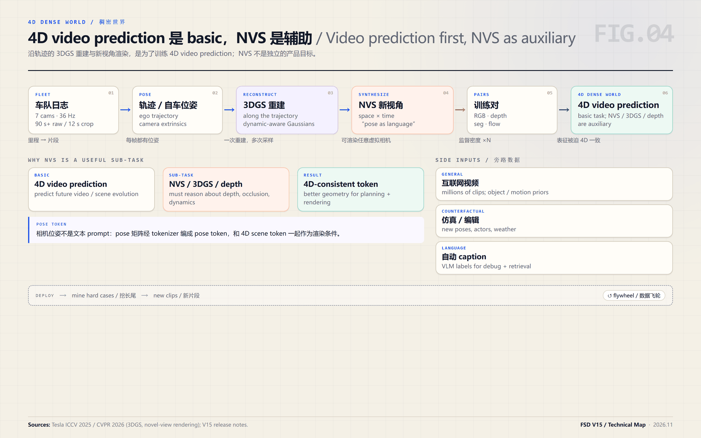
为什么 NVS 能帮到 4D video prediction
NVS 给定一个没见过的相机位姿，要求渲染该视角的画面。要做得对，模型必须编码深度、遮挡、物体背面和动态一致性，因此它是一种更“硬”的辅助监督。
4D video prediction
预测未来的视频/场景演化；这是 4D dense world 的主任务，不是 V15 独有的新任务。
NVS / reconstruction / 3DGS / depth
通过新视角、重建、几何监督，逼表征编码 3D/4D 一致性；它们是训练手段，不是最终产品。
数据闭环：从车队日志到 NVS 训练对
- 车队日志：7 路摄像头、36 Hz；原始 clip 90 秒以上，训练裁到约 12 秒；每帧带 ego pose 与相机外参。
- 轨迹 / 位姿：自车轨迹和相机位姿是 NVS 的条件；它们可以离散成 token，也可以文本化。
- 3DGS 重建：沿轨迹做动态感知的高斯重建；特斯拉公开讲过“生成式 3D Gaussian”，重建约 220 ms（ICCV 2025 解读）。
- 新视角渲染：在空间（左/右/上/下）和时间（前/后几帧）上采样虚拟相机，渲染 RGB、depth、segmentation、flow。
- 训练对：把“条件（pose token / 语言）+ 目标（新视角）”喂给 UVE/scene token，作为 4D dense world 的辅助任务。
这条闭环的经济学很强：一次采集，多次监督。同一段 90 秒以上的原始 clip，不再只产出一条“人类驾驶轨迹”，而是可以产出成百上千个 NVS 训练对。
Pose：矩阵 tokenizer，不是文字
Pretrain 里的相机位姿不是文本 prompt。相机位姿由 pose 矩阵经过 tokenizer 编码成 pose token，直接作为条件输入。
同一个 4D scene token 同时被两种条件查询：
- 动作条件：自车接下来怎么走；
- pose token：从哪个相机位姿看这个世界。
语言是另一类条件接口（指令、CoT），和 pose token 是两套输入，不要混为一谈。
车端 NVS 渲染器不是可持续 rollout 的 world model
- 车端 1B NVS 渲染器不是云端 simulator，也不是可以持续 rollout 的 world model。
- 它做的是短时预测和差分生成：以 4D UVE scene token 为条件，预测短时变化量，再解码成新视角。
它按单帧或小 chunk 生成。关键不是 chunk 长度，而是短时预测和差分能力。
| 车端 1B renderer | 云端 world simulator | |
|---|---|---|
| 时域 | 短时；单帧或小 chunk | 长时域 rollout |
| 条件 | 4D UVE scene token + pose token | 状态 + 动作 + 场景编辑 |
| 用途 | Reality View、NVS 监督 | 闭环评估、RL、对抗样本 |
| 算力 | ½ TRIP / UVE frame | 数据中心级 |
GS 重建质量、动态物体、遮挡区域、光照变化都会影响 NVS；模型会在遮挡区补出不存在的细节。NVS 指标好看，不等于 planning 指标变好。
Compact token：从“实例列表”到“4D 场景”
- V14 的 compact token 是“implicit scene + explicit instance”。
- 这是我们的推测：V15 把重心移到 implicit scene，把 instance 从“接口”降级为“可选查询”。
- 具体占比和 loss 权重不确定，但重心肯定偏向 implicit。
- 这不是审美选择，而是 NVS 逼出来的结果。

V14：实例是接口，也是有损表达
显式实例可解释、可监督、可做安全规则、可做可视化。但实例列表是有损的：它把场景表达成一组实例，非实例语义不会完整保留。scene token 以重建为目标，在重建中是无损的，能保留这些信息。
而且，实例列表是变长的：不同场景有不同数量的车、人、交通灯。Trajectory head 对它做 cross-attention，计算图会随场景变化，工程上更难做确定性时延。
V15：场景是接口，实例是查询
V15 把固定尺寸的 4D scene token 作为主接口，把 instance 变成从 scene token 里“query 出来”的可选头。这样做有三个直接收益：
- 表征更密：4D NVS 迫使 scene token 编码几何、外观、动态；规划拿到的不是一个“物体清单”，而是一个可查询的世界。
- 计算更稳：固定尺寸张量的 attention 更便宜、更可预测；没有变长列表，时延更可控。
- 推理可裁剪：辅助头（感知、语言、可视化）可以在车端关掉或降频，只保留主线和渲染。
“弱化 instance”不等于“删掉 instance”
- 更严谨的说法是：instance 从“接口”降级为“查询”。
- 训练时仍然需要实例监督（检测、跟踪、分割、占据），否则安全验收过不了；
- 但这些头可以从 scene token 解码，而不是作为独立 token 集合参与规划。
- 推理时，它们可以被裁剪或异步执行。
这会带来一个可观察的预测：V15 的车机可视化里，传统“框 + 图标”会减少，更多是稠密的、生成式的场景；但这不等于感知头消失了，只是它不再占据规划接口的中心。
- 固定尺寸 scene token + 直接 cross-attention，比“变长实例列表 + 多级融合”更容易做 kernel fusion、cache 复用和确定性时延。
- 渲染器还可以被调度到主控制环的剩余算力上——这正是“½ TRIP”能成立的前提。
四大任务集：dense world、sparse world、planner、language
- 4D dense world：4D video prediction 是 basic 大任务；NVS、3DGS、depth、重建、渲染是它下面的 dense WM 子任务。
- 4D sparse world：AD 感知任务集。
- planner：包含 multi-modal trajectory prediction、agent prediction 等子任务。
- language：场景理解 caption、基于 caption 的 style transfer、pose as language、instance inpainting as language。
四个任务集不用 task prompt 切换，全部作为默认任务一起预训练。

四个任务集的分工
4D video prediction
- 4D video prediction 是这个任务集里的 basic 大任务；
- NVS、3DGS、depth、重建、渲染都是它下面的 dense WM 子任务。
- 它并非 V15 新发明，通用 VLM/视频模型已有类似能力。
AD 感知
- object detection、tracking、occupancy（occ）、segmentation（seg）、traffic light detection（TLD）、depth/flow 等，构成 sparse world 任务集。
- 它是 AD 最成熟的监督来源，也是 dense world 与 planner 之间的稀疏世界接口。
Planner
planner 任务集包含 multi-modal trajectory prediction、agent prediction，以及交互、RL、闭环等子任务。它是最终影响驾驶行为的任务集。
Language
- 场景理解 caption、基于 caption 的 style transfer、pose as language、instance inpainting as language。
- 它和 dense、sparse、planner 都交互：给 dense 提供编辑与风格，给 sparse 提供语义，给 planner 提供指令与解释。
- Language 是独立任务集，不是旁路。
- 它同时提供条件与监督：caption 做场景理解和检索，style transfer 改外观，pose as language 给视角指令，instance inpainting 做语言驱动的编辑。
- 四个任务集共享同一个 4D scene token。
- pose as language 是语言任务里的视角指令；
- NVS 的相机位姿仍由 pose token 编码，两者不是同一条输入。
一段数据，四类监督
四个任务集能放在一起训，前提是 data-task pairing 做得足够细。同一段 90 秒以上的原始 clip 可以同时产出：
| 监督 | 数据来源 | 标签/条件 | 用途 |
|---|---|---|---|
| 4D video prediction | 车队 clip + 互联网视频 | 未来帧、时间偏移、场景演化 | 4D dense world 任务集的 basic 大任务 |
| NVS / 3DGS / depth | 车队 clip + 3DGS 重建 | 新相机位姿、RGB/depth/seg | 4D dense world 任务集下的 dense WM 子任务 |
| 4D sparse world | 车队 clip + 自动/人工标签 | object det、tracking、occ、seg、TLD、depth/flow | AD 感知任务集；安全与蒸馏监督 |
| Planner | 人类驾驶轨迹 + 仿真 | 多模态未来、agent 交互、reward、接管 | planner 任务集：multi-modal trajectory prediction + agent prediction |
| Language | VLM caption + 人工审核 + 指令/编辑数据 | caption、style prompt、pose instruction、inpainting mask | 第四个任务集；与 dense、sparse、planner 都交互 |
训练框架：数据引擎 → 通用 VLM/世界模型预训练 → 四个任务集预训练 → 蒸馏部署 → 数据回流。

顺序与权重
四个阶段：通用 VLM/世界模型 warm-up → 4D dense + sparse → planner → 蒸馏部署。
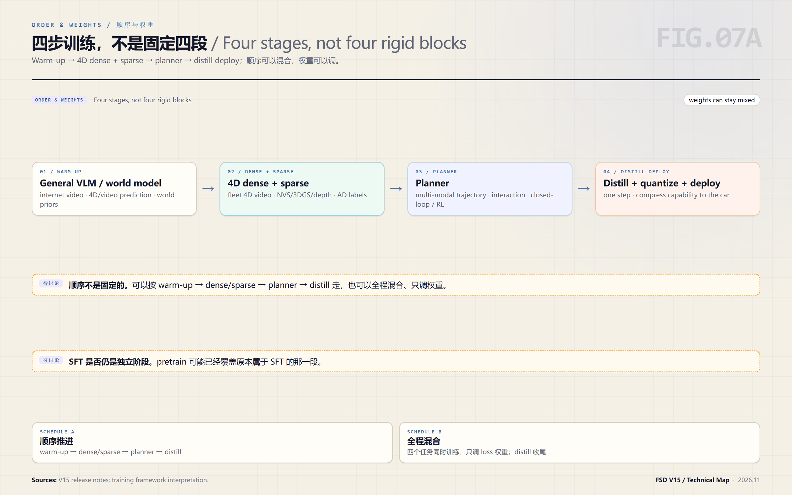
顺序不是固定的。可以按上图顺序推进，也可以全程混合、只调权重。
SFT 是否仍作为独立阶段，待讨论。pretrain 可能已经覆盖原本属于 SFT 的那一段。
难点
- 四个任务集会互相抢容量：4D dense 吃 decoder 和算力，sparse world 拉高分辨率，planner 要求低时延。
- 难点在于任务平衡与评估：如果 NVS 指标涨了、planning 指标没涨，它仍然只是辅助任务。
- 不管任务怎么合并，最终影响驾驶的仍然是 planner。
- 4D dense world 是 basic/辅助，4D sparse world 是感知接口；
- 判断 V15 成败的指标仍是干预率、舒适度、通行效率和闭环安全，不是渲染画质。
post-training 并进 pretrain 之后，叫 close loop training
推测 V15 可能已经把 post-training 并进 pretrain；并入之后，这一段叫 close loop training。是否成立不确定。

V14 的 post-training 为什么独立
- 仿真器和策略是两套东西。
- 策略在真实数据上做模仿学习，再在仿真器里做 RL/闭环评估。
- 仿真器生成状态，策略生成动作，两者通过接口交换。
- 这个接口既是工程边界，也是组织边界。
V15：反事实动作能力
V15 的 4D 渲染器具备反事实动作能力：给定“如果此时左转”，它能生成物理合理、时序一致的未来。
因此它是 post-training 的载体，而不是只回放训练时见过的轨迹。
close loop training：并入之后的名字
- post-training 是原来的名字。
- 并进 pretrain 之后，这一段叫 close loop training。
- 数据和目标没有区别：都是驾驶数据，都是轨迹/动作监督。
- 区别只在调度：在 pretrain 的某个区间插入 close loop training，让模型给出 action，渲染器给出对应的 vision future，再计算 reward。
问题不是 post-training 有没有数据或 loss，而是它是否还被单独调度。
如果这个推测成立，post-training 已经在 pretrain 内部完成，名字变成 close loop training，不再是一个独立阶段。
close loop training 的 balance
保真度 vs 覆盖
渲染要物理正确，而不只是好看；碰撞、遮挡、光照、他车反应都会影响策略。
reward 信号 vs reward hacking
reward 要能推动策略，又要用真实接管、碰撞、舒适度、规则约束做锚。
闭环分布 vs 真实分布
闭环跑久了会进入模型自己生成的状态分布，需要真实车队持续校准。
算力成本 vs 闭环时长
闭环 rollout 比监督学习贵一个量级；并进 pretrain 只是把账单移到 pretrain，不是免费。
蒸馏部署：一个环节，不是两个阶段
蒸馏和部署在工程上可能是一步；把云端能力压到 4B 车端，蒸馏、量化、剪枝、算子融合、时延工程是同一件事的不同环节，而不是“先蒸馏、再部署”两个独立阶段。
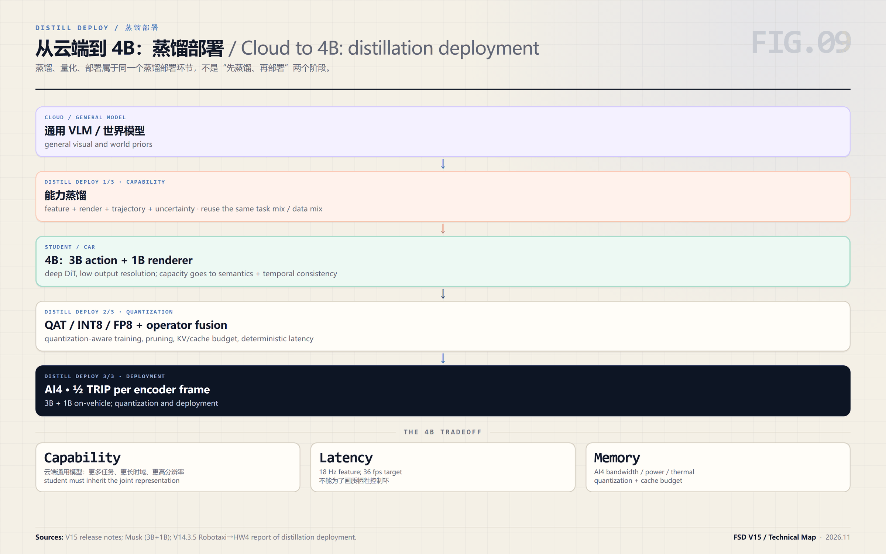
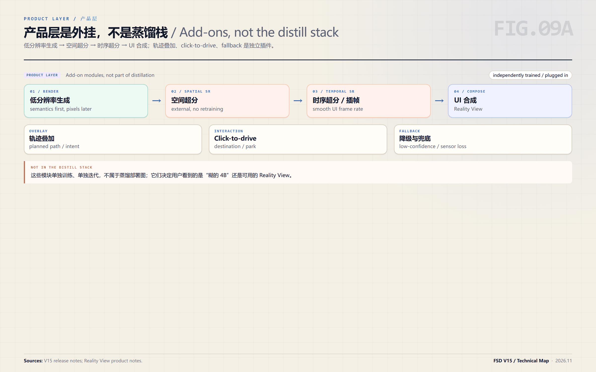
深 DiT + 低分辨率
V15 的 DiT 堆得很深，但输出分辨率不大；空间超分和时序超分都是外挂。容量花在语义和时序一致性上，像素细节交给产品层。
- 语义优先：场景理解、遮挡关系、动态一致性需要深网络；
- 像素后置：UI 分辨率可以通过空间超分放大；帧率可以通过时序超分/插帧补足；
- 算力可控：生成低分辨率 + 外部超分，比端到端生成高分辨率便宜得多，也更容易做确定性时延。
这些是不改变模型训练的外挂，但决定用户看到的是“糊的 4B”还是可用的实景。产品化的差距，很多时候就在这些细节上。
蒸馏部署包含什么
如果 V15 的路径是“通用预训练 → 车端蒸馏部署”，那蒸馏部署至少包括三层：
- 能力/表征：Universal Vision Encoder（UVE）与 scene token 的中间特征，让学生学会“看世界的方式”；
- 任务结构：四个任务集的权重、data-task pairing、训练顺序；
- 部署：量化、剪枝、算子融合、确定性时延。
- 因此，“复用 pretrain 的 task/data 配比”很重要：蒸馏部署不是从零教一个 4B 学生，而是让它在一个已经验证过的任务分布里，模仿云端模型的行为和表征。
- 云端模型是 Grok 5，约 1.5 万亿参数。
能力蒸馏
云端 → 学生：特征、logits、渲染、轨迹、不确定性。目标是“会同样的任务”，不是“参数更小”。
表示量化
FP32 → FP16/INT8/FP8，QAT（Quantization-Aware Training）、剪枝、算子融合。目标是“同样的能力，更低的带宽/功耗”。
产品层的四个外挂
- 空间超分：把低分辨率渲染放大到 UI 分辨率；
- 时序超分/插帧：把 chunk 之间的跳变补平，维持 36 fps 的观感；
- 遮挡补全：对摄像头盲区做合理推断，而不是简单回放；
- UI 合成与降级：轨迹箭头、可点击目标、地图叠加；渲染失败时的安全回退。
这些外挂不改变模型训练，但改变产品体验；它们也是“为什么特斯拉能先做出来”的一部分——不是算法 alone，而是算法 + 芯片 + 座舱 + 产品团队一起调。
- 4B 更像一个被任务结构压过的模型，而不是单纯的小模型。
- 它的能力上限由教师和任务配比决定，下限由蒸馏/量化/时延工程决定。
- 把 4B 当成“缩小版云端模型”会低估蒸馏部署的作用；
- 把 4B 当成“另一个云端模型”会低估部署约束。
产业影响：门槛移到云和蒸馏部署
竞争点会从“有没有一个端到端模型”，转向两件事：能不能拿到或训练足够强的通用模型，能不能把它蒸馏部署到车端并稳定运行。

2 亿元/月买的是什么
“月投入 2 亿元”大致对应四块支出：
算力
千卡到万卡级集群的折旧或租赁、网络、存储、训练框架与容错；预训练的账单主要在这里。
数据与标注
车队回传、清洗、自动标注、人工审核、3DGS 重建、仿真场景生成；数据引擎是容易被低估的部分。
人才
大模型预训练、世界模型、驾驶规划、芯片协同、评测。跨学科团队，而且要能一起工作。
评测与闭环
神经模拟器、闭环 RL、安全验证、监管沟通。没有评测，预训练只是“更大”，不一定是“更好”。
三条路线
- 路线 A：全栈通用预训练。
- 自己拥有基础模型、VLA、世界模型和蒸馏部署管线。
- 上限最高，固定成本也最高。特斯拉是代表。
- 如果华为或小米能把自家大模型与 VLA 合并，也有机会。
- 但“有模型”不等于“有驾驶数据、安全验证和组织协同”。
- 路线 B：借大模型 + SFT + 蒸馏部署。
- 用外部 LLM/VLM/世界模型，SFT 代替完整预训练，再做蒸馏/量化。
- 大多数国内车企和具身智能公司会先走这条路：不重建预训练基建，先把蒸馏部署管线跑通。
- 代价是模型不可控、授权/合规风险、能力上限受制于人。
- 路线 C：垂直数据/场景。
- 区域数据、长尾场景、监管关系、成本控制。
- 在 L4 限定场景或城市仍能形成壁垒。
- 如果基础模型代差拉大，场景壁垒的作用会下降。
蔚小理、华为、小米：方向与投入
- “御三家”指蔚小理。
- 三家都在朝通用预训练 + 车端闭环的方向走，已经投入巨额研发费用：小鹏释放端到端/VLA 的正向信号，蔚来发布新一代方案，理想把 pretrain 与量产闭环/世界模型结合。
- 方向是对的，是否走通不确定，但都在朝 FSD V15 这条路努力。
- 华为和小米的潜在优势在于“自家大模型 + 自家车/芯片/渠道”的组合。
- 如果它们能把通用大模型与 VLA 结合，再复用云端训练/蒸馏部署管线，对只做驾驶算法的公司会形成很大压力。
- 但难点不只在模型，还在驾驶数据闭环、功能安全、组织协同和监管。
- 任何一环掉链子，都会变成“看起来能打，落地很慢”。
结论：拿别人的大模型 + SFT 代替完整预训练 + 蒸馏部署，是一些公司接下来一个季度最快的路径。
- 对大多数公司，现实策略不是“追 2 亿/月的预训练”，而是“选一个够强的基础模型，把 SFT 和蒸馏部署做到极致，同时用垂直数据守住场景”。
- 这会拉大与特斯拉的上限差距，但先把产品做出来。
- 风险是：当对手用通用世界模型做 zero-shot 长尾时，垂直数据的边际价值会下降。
需要关注的关键指标
接下来 1–2 个季度需要关注的关键指标：

| # | 指标 | 如果不是 |
|---|---|---|
| 01 | Universal Vision Encoder（UVE）/ 18 Hz 的出处 | 官方文档没有对应表述。 |
| 02 | 4B / Grok 的规模 | 口径变化，需要重算。 |
| 03 | NVS 是否只是 4D video prediction 的辅助 | NVS 是主任务或产品功能，不是辅助。 |
| 04 | 是否存在云到端管线 | 云端和车端其实是两个模型。 |
| 05 | 25× 的基线与第三方数据 | 改善幅度更小，V15 被高估。 |
| 06 | 国内是否出现蒸馏部署管线 | 大家仍在自研完整预训练，或路线更分散。 |
| 07 | 华为/小米是否合并大模型与 VLA | 组织、数据、安全壁垒比模型更难。 |
结构性变化
通用模型能力和蒸馏部署成为主轴；驾驶专用预训练单独的重要性下降；拿不到强模型或蒸馏部署管线的公司会更快落后。
一次体验升级
Reality View 很酷，但驾驶能力提升有限；行业回到数据闭环、成本和安全验证的竞争，通用预训练叙事降温。
FSD V15 对 VLA 与 WAM 的影响
WAM S01 属于具身智能（embodied AI）的讨论，不是 FSD 的模块名。这里只把它当作一个类比。
对 VLA 的影响
- VLA 把视觉/语言接到动作。
- V15 的通用 VLM 预训练、默认任务训练和 4D scene token，让 VLA 的动作头直接读共享表征；
- task prompt 拆除后，动作不再依赖任务切换，模型更 compact。
VLA 因此被加强：语言/视觉意图、世界表征和轨迹输出在同一条前向里，planner 不需要单独的“任务路由器”。
对 WAM 的影响
- WAM 的核心假设是世界模型可以支撑动作评估与 rollout。
- FSD V15 没有把这种世界模型放在车端：车端 1B NVS 渲染器只做短时预测和差分生成，不是可持续 rollout 的 simulator。
所以 FSD 把“世界模型”拆成三块：通用预训练里的世界表征、车端短时 NVS、planner 的轨迹与安全。WAM 的完整 rollout 留在云端，不进入车端控制环。
对比
| VLA | WAM | |
|---|---|---|
| FSD 对应 | VLM/VLA 预训练 + planner | 车端短时 NVS + planner |
| V15 的影响 | 动作头直接读共享表征，能力更强 | 在线 rollout 被限制，世界模型留在云端 |
| 结果 | VLA 成为主线 | WAM 退为类比与云端能力 |
术语表
名词与数字
| 名词 / 数字 | 出处与可信度 | 它指什么，容易误读在哪 |
|---|---|---|
| Universal Vision Encoder（UVE） | Musk | Universal Vision Encoder，通用视觉编码器。负责把连续摄像头画面压成特征，并在 FSD、Robotaxi、Optimus 之间共用。发布说明只写了“vision encoder”，没有展开全称。 |
| 18 Hz | Musk | Universal Vision Encoder（UVE）的特征更新频率，不是相机帧率，也不是最终画面帧率。 |
| 3B + 1B / 4B | Musk | 约 3B 的驾驶动作模型 + 约 1B 的渲染模型，合计约 4B，是车端推理图。 |
| 10B | 媒体报道 | 有媒体称 V15 参数从约 1B 增至约 10B，但没有说明统计范围，且与 Musk 的 3B+1B 不一致。它是媒体口径，不当作教师模型，也不和 Grok 混为一谈。 |
| Grok | 讨论 | Grok 5 约 1.5 万亿参数（报道）；Universal Vision Encoder（UVE）属于 Grok 体系，并经过多级蒸馏进入车端。 |
| 25× 关键干预率 | 官方口径 | 是“critical intervention rate”相对 V14 的改善，不是“安全性 25 倍”，也不是“提升 25%”。特斯拉没有公布 V14 的基数和统一定义。 |
| ½ TRIP 算力 | Musk 口径 | 是“一个 TRIP 加速器的一半”，不是“半颗 AI4”。 |
| HW4 only | 官方口径 | V15 只支持 AI4/HW4；HW3 继续走 v14 Lite 分支。 |
表中数字的出处：Universal Vision Encoder（UVE）、18 Hz、3B+1B、36 fps 目标、½ TRIP 来自 Musk 推文的新浪转述（2026-11-22）；10B 来自 TechWeb 报道（2026-11-23）；25× 来自搜狐/环球网对发布说明的报道（2026-11-22）；HW4 支持范围来自同一组报道。
VLA
Vision-Language-Action。以视觉为输入、语言为中间/输出、动作为目标的模型范式。
NVS
Novel View Synthesis，新视角合成。给定新相机位姿，渲染该视角的画面；4D NVS 还要求时间一致。
3DGS
3D Gaussian Splatting。用大量高斯椭球表示场景，可微、渲染快、支持动态物体。
DiT
Diffusion Transformer。用 Transformer 做扩散/流匹配去噪主干的生成模型。
Task prompt
用文本/条件指定当前任务的机制。V15 pretrain 拆除 task prompt，所有任务默认一起训练。
Mean-flow
Flow matching 的变体，学习区间平均速度场；用更少 NFE 完成生成，适合车端低时延。
Compact token
V14/V15 的中间表征接口；V14 含 implicit scene + explicit instance，V15 更偏 4D scene token。
SFT
Supervised Fine-Tuning。高质量驾驶数据上的监督微调。
RL / 闭环
强化学习与闭环评估。用仿真/世界模型 rollout，按 reward 和安全约束优化策略。
Distillation
蒸馏。把大模型教师的能力（特征、输出、任务结构）迁移到小车端学生。
QAT / 量化
Quantization-Aware Training。训练时模拟低精度，部署时转 INT8/FP8，降低带宽/功耗。
TRIP
特斯拉 AI4 芯片中的神经网络加速核；Musk 说 Reality View 用“半个 TRIP”，不是半颗 AI4。
MPCI
Miles Per Critical Intervention，平均多少次关键干预行驶的里程；V15 的 25× 就是相对 V14 的这个指标。
来源与说明
主要来源
- Tesla FSD V15 推送与发布说明综合报道，搜狐/环球网，2026-11-22：链接
- Reality View 生成式实景与算力说明，中关村在线，2026-11-23：链接
- FSD V15 视觉编码器 / Reality View 深度拆解，OFweek，2026-11-23：链接
- Musk 推文转述：UVE 全称 Universal Vision Encoder、18 Hz、3B/1B、36 fps 目标、½ TRIP，新浪/微博，2026-11-22：链接
- Tesla CVPR 2026 演讲全文与解读（通用机器人基础模型、中间输出、World Sim NN），OFweek，2026-06-05：链接
- 从 Tesla ICCV 2025 分享看端到端（2B token、3DGS、语言推理），人人都是产品经理，2025-12-22：链接
- UVE / 3B / 1B 蒸馏 与 18 Hz 的公开转述整理，微博，2026-11-22：链接
- Musk 回复“3B + 1B”截图与讨论，微博，2026-11-22：链接
- V15 “10B 参数 / 25× / 架构重构”综合报道，TechWeb，2026-11-23：链接
- V14.3.5 统一模型与 Robotaxi→HW4 蒸馏报道，网通社，2026-07-21：链接
- FSD V15 刷屏与 25× / 产业影响分析，搜狐汽车，2026-11-23：链接
关于 10B：第 8 条是媒体口径，与 Musk 的 3B+1B 不一致；按媒体口径处理，不是教师模型。Grok 5 约 1.5 万亿参数。
附录 A：11 条判断
- 11 条判断列在文末 附录 A，逐条给出评估。
- 与公开信息冲突的地方（如“Grok 直接共同训练”“10B vs 4B”）按统计范围拆开；
- 没有公开证据的地方（如“去掉 SFT”“弱化 instance token”“超分外挂”）标为推断。
引用与更新
引用格式：管中窥豹 FSD V15, 2026-11-23, v1.2。
版本：v1.3 · 2026-11-23 · 中文/English · 14 张图 · 单文件 HTML。
声明：本文不构成投资建议；公司/路线判断为作者分析，不代表任何公司官方立场。
附录：11 条判断的校验表
11 条判断逐条列出，给出评估和对应章节。
| # | 判断 | 结论 | 说明 |
|---|---|---|---|
| 01 | Grok 与 FSD 一起训练；V14 的 VLA pretrain 变成 V15 的 general pretrain | 成立 | UVE 由 Grok 多级蒸馏，跨 FSD/Robotaxi/Optimus 共用。见 §04。 |
| 02 | SFT 依然使用 driving 数据 | 成立 | V15 继续使用车队驾驶数据。见 §04。 |
| 03 | 4D video 权重增强；车端 NVS 渲染器支持新视角；数据沿轨迹重建 | 成立 | 4D video 是 basic；NVS 是 4D dense 下的子任务。见 §05。 |
| 04 | V15 可能去掉 SFT，只使用 pretrain | 按此口径 | 训练 pipeline 按四大任务集组织，不再单独设 SFT 阶段。见 §07。 |
| 05 | Compact token = implicit scene + explicit instance；V15 弱化 instance | 成立 | implicit 4D scene token 为主，explicit token 可选保留。见 §06。 |
| 06 | Traj head 改动不大；与 scene token 交互加速；推理可移除辅助头 | 成立 | trajectory head 直接读 scene token；辅助头推理可删。见 §06。 |
| 07 | 合并任务：dense VLM/4D gen、perception、planner，共四类 | 修正为四个任务集 | 4D dense、4D sparse、planner、language。见 §07。 |
| 08 | post-training 并入 pretrain 后称 close loop training（推测） | 推测 | 区别在调度：action → vision future → reward；是否成立不确定。见 §08。 |
| 09 | 3+1B：3B backbone，1B NVS decoder；SR 是工程外挂 | 成立 | 3B + 1B = 4B；Grok 5 约 1.5 万亿参数。见 §09。 |
| 10 | 范式从 pretrain→SFT→post-train 变成 pretrain→distillation；大模型到 4B | 成立 | 蒸馏部署是一个环节。见 §09。 |
| 11 | 国内少数公司能月投 2 亿做 pretrain；蔚小理、华为/小米；VLA 成为主线；借模型 + SFT + 蒸馏 | 产业判断 | “2 亿/月”是量级参考；公司位置是示意。见 §10。 |
- After FSD V15 rolled out over the weekend, many people watched a lot of videos and compared notes; some consensus emerged.
- This is a narrow look at V15's improvements and implementation.
- The article focuses on framework design and implementation; for the surface-level experience, watch YouTube.
- These are personal notes for record and reference only.
- Any resemblance is accidental.
- If readers disagree, they are right.
- If the implementation happens to resemble some company's approach, it is pure luck.
An outside reading
What changed on the surface
- A new vision encoder, which Musk calls Universal Vision Encoder (UVE) and which is shared across FSD, Robotaxi, and Optimus.
- Reality View replaces the old visualization with generated novel views.
- Musk mentions a 3B action model + 1B renderer, 18 Hz features, and a 36 fps target.
General pretraining determines driving capability
- V15 connects general Vision-Language Model (VLM) pretraining, VLA (Vision-Language-Action) pretraining, and on-car distillation deployment into one line. General large-model pretraining determines V15's driving capability;
- its significance lies less in “another driving-specific pretrain task” and more in the transfer of general-model capability to the edge.
What shipped
What changed in the driving net
- New vision encoder; better signs, small animals, road debris, chains, potholes, deep water; school-zone/weather speed control; slowdown before speed cameras; bike-rack mode; DMS with hats/sunglasses; navigation and parking-route learning.
- Tesla claims a 25× improvement in critical intervention rate (release-note coverage), but the claim needs third-party data.
Generative reality on the center screen
- A virtual camera above the car renders the surrounding world in real time.
- It is not camera replay and not a game-engine asset library.
- Tesla calls it “novel view synthesis,” produced by the same end-to-end driving model while it drives.
- Tap a point to set a target; full-screen or split-screen.
The new encoder is trained on millions of internet videos and shared across FSD, Robotaxi, and Optimus. General large-model pretraining determines V15's driving capability.
From V14 to cloud-to-edge
- V14 uses three stages: pretrain → SFT → post-train.
- They belong to one model, not three separate models.

The dimensionality problem V14 faced
- By Tesla's public ICCV 2025 / CVPR 2026 framing (CVPR 2026 talk write-up): 7 cameras × 36 Hz × 5 MP; raw clips are 90 s+, cropped to ~12 s for training, and 5×5-pixel patches give roughly 2 billion input tokens; add navigation, 100 Hz kinematics, and 48 kHz audio.
- The output is just 2 tokens: steering and acceleration.
- End-to-end learning is the search for a causal map from 2B to 2.
- V14 therefore injects a large set of interpretable intermediate signals: 3D occupancy and flow, vehicles/VRUs, traffic lights and signs, road boundaries and lanes, speed limits, interaction probabilities, and natural-language reasoning.
- They are both supervision and a handle for safety review.
V14's compact token
- V14's compact token has two parts: an implicit scene token and some explicit instance tokens (cars, VRUs, traffic lights, lanes).
- The trajectory head cross-attends to these tokens and outputs a multi-modal trajectory.
Why it worked
- Explicit instances are interpretable, easy to supervise, and easy to wrap in safety rules.
- SFT compresses human value judgments into the policy.
- Post-train fixes rewards with RL/closed-loop.
- Each stage had a job.
What it costs
- The instance list is lossy: it represents the scene as a set of instances, so non-instance semantics are lost.
- The scene token is lossless in reconstruction.
V14's real legacy is intermediate supervision, not a particular head: make the black box emit inspectable things before it emits an action.V14's real legacy is intermediate supervision, not a particular head.
V15 changes the interface: instance list → 4D scene token, next-frame prediction → novel-view rendering, three stages → general pretrain + distillation deployment.
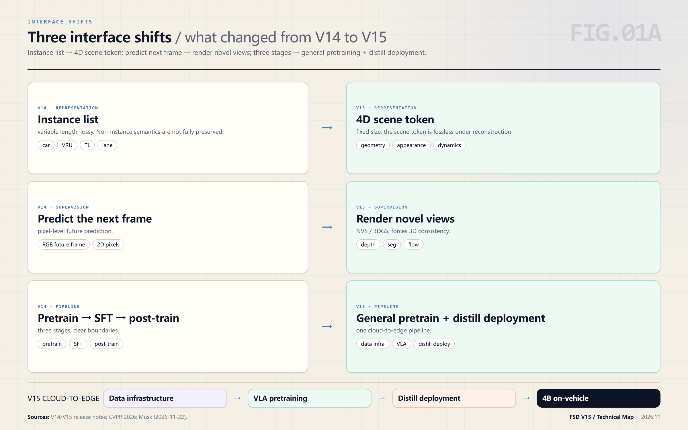
The pipeline on its own: VLM pretraining → VLA pretraining → distillation deployment
The pipeline has three steps. Our guess:
- Data infrastructure / VLM pretraining (cloud): internet video + large amounts of autonomous-driving data + simulation. Grok's training-data scale is large, and it includes large amounts of driving data; this is analogous to OpenAI folding its robotics team into agents to integrate data. Universal Vision Encoder (UVE) may be part of Grok, possibly after multiple stages of distillation.
- VLA pretraining: VLA is Vision-Language-Action, connecting vision/language to action; it contains planner sub-tasks such as multi-modal trajectory prediction and agent prediction. This layer decides whether general capability becomes driving behavior.
- Distillation deployment (car): distill the cloud teacher into a 4B on-car graph (about 3B action + 1B renderer), then quantize, prune, fuse operators, and deploy on AI4. Distillation and deployment are one step, not “distill first, then deploy.”
One encoder, two decoding paths
V15 architecture: a shared Universal Vision Encoder (UVE), a ~3B action model, a ~1B renderer, and 18 Hz (Musk).

- Forward structure: input → UVE → tokenizer → four task sets in training; at inference, only trajectory + lightweight NVS.
- The 3B action model and 1B renderer are both distilled from UVE.
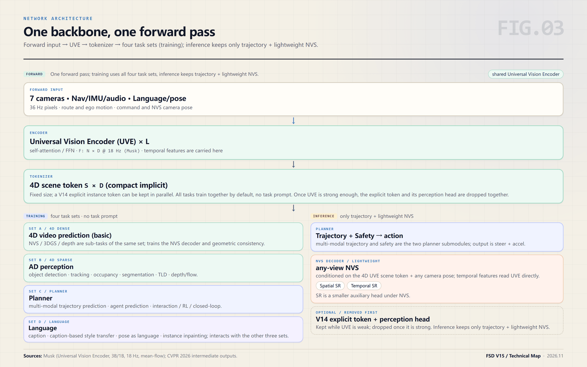
UVE: Universal Vision Encoder, a general “visual clock”
- UVE (Universal Vision Encoder) emits features at 18 Hz.
- FSD, Robotaxi, and Optimus share the encoder.
- The 18 Hz figure comes from Musk's posts.
- It is pretrained on millions of internet videos for general vision, then aligned to driving on fleet data.
- The encoder becomes sensitive not only to “driving-relevant objects,” but to the general world—materials, lighting, animals, debris, occlusion.
Distillation: how action and renderer share UVE
- The 3B action model and the 1B renderer are distilled from Universal Vision Encoder (UVE) and share the same 4D scene token.
- The renderer conditions on that scene representation to generate a novel view.
- As a result, rendering loss flows back into UVE, forcing the features to satisfy two things at once:
- Action discriminability: details that should change braking cannot be thrown away;
- Rendering consistency: occlusion, depth, dynamics, and lighting must be coherent from a new viewpoint.
- That is what “shared representation” buys over “add another generative model”: it does not just add an output;
- it adds a constraint.
The 1B renderer: what conditional mean-flow means
- The renderer is a 1B conditional mean-flow model (a flow-matching variant that learns the average velocity field over an interval).
- It is conditioned on the 4D UVE scene token and renders a novel view from any camera pose.
- The “previous frame” is not renderer output; it is the 4D scene token formed by fusing the previous scene token with the current UVE frame.
- The model predicts the change in token space, then decodes the current view.
- Musk mentions a 36 fps target;
- the renderer generates single frames or small chunks differentially.
- “½ TRIP” means half of one TRIP accelerator, not half of an AI4 chip.
- The only usable statement is that it spends spare compute, not the control loop's budget.
On-car inference graph: 3B action + 1B renderer = 4B
| Layer | Size | Evidence | Note |
|---|---|---|---|
| On-vehicle action model | 3B | Musk post | Outputs trajectory/control with auxiliary heads. |
| On-vehicle renderer | 1B | Musk post | NVS decoder, conditional mean-flow. |
| On-vehicle graph | 4B | Sum | 3B + 1B = 4B. |
Beyond driving-specific pretraining
V15's change lies not in “a few more driving-pretrain tasks,” but in general VLM pretraining: general large-model pretraining determines V15's driving capability, and enters the car through VLA pretraining and distillation deployment.
VLM already does world modeling in the cloud
- Video generation, 4D scene generation, and world models already exist in general VLM/video models; they are not inventions unique to autonomous driving.
- For driving, the hard part is making those capabilities deployable on the car, verifiable in a closed loop, and safe enough to fall back.
- If Tesla has done that, the value is not “inventing 4D video” but “connecting general-model pretraining to the edge.”
VLA: vision/language to action
- VLA connects vision/language intent to action.
- In the “general pretrain → on-car distillation deployment” frame, VLA turns the shared representation into planner trajectories and actions.
Pretraining removes the task prompt
- FSD V15's pretraining removes genception-style task prompts.
- All tasks are trained as default tasks; no prompt specifies which task is active.
- The model is therefore more compact: no task-prompt tokens and no prompt-conditioned branches.
- The multi-layer DiT stays on one task distribution and does not undergo large task-distribution shifts when the prompt changes.
- One possibility is that FSD V15 removed SFT and uses pretraining only: pretraining covers driving behavior directly, with no separate SFT stage.
- This is marked open in §07.
Data infrastructure and pretraining
- Internet video + large amounts of driving data + simulation;
- VLM/video/world models provide vision, physical priors, and generation.
VLA pretraining
- Connect general representations to driving actions, trajectories, and world prediction.
- Driving data does its work here.
Distill and deploy to the car
Distillation, quantization, and deployment engineering are parts of one distillation deployment step, not three separate stages.
Grok
- Grok 5 is about 1.5 trillion parameters (report).
- Its training data includes large amounts of autonomous-driving data; this is analogous to OpenAI folding its robotics team into agents to integrate data.
- Universal Vision Encoder (UVE) is part of Grok and reaches the car after multi-stage distillation.
The impact on autonomy comes from general-model pretraining moving down to the edge, not from autonomous driving inventing a pretraining method that changes how LLMs are trained.
4D video prediction is the basic task; NVS is a sub-task under it
- 4D video is not a task invented by V15.
- General VLM/video models already do 4D video.
- For a driving model, 4D video is a basic task.
- Novel View Synthesis (NVS) is not a separate “new core.” NVS is a sub-task inside the 4D dense set used to train 4D video prediction.
- Reconstruction, rendering, 3D Gaussian Splatting (3DGS), and depth all belong to this task set.
- The task set is called 4D dense world.

Why NVS helps 4D video prediction
- NVS takes a camera pose the model has never seen and renders that view.
- To do it well, the model must encode depth, occlusion, object backsides, and dynamic consistency, which makes it a harder auxiliary signal.
4D video prediction
Predict future video/scene evolution; the main task of 4D dense world, not a V15 invention.
NVS / reconstruction / 3DGS / depth
Force the representation to encode 3D/4D consistency; training tools, not the final product.
The data loop: from fleet logs to NVS pairs
- Fleet logs: 7 cameras, 36 Hz; 90 s+ raw clips, cropped to ~12 s for training; every frame has ego pose and camera extrinsics.
- Trajectory / pose: ego trajectory and camera pose condition the NVS; they can be discretized into tokens or verbalized as text.
- 3DGS reconstruction: dynamic-aware Gaussian reconstruction along the trajectory; Tesla has publicly discussed generative 3D Gaussian at ~220 ms (ICCV 2025 analysis).
- Novel-view rendering: sample virtual cameras in space (left/right/up/down) and time (past/future frames); render RGB, depth, segmentation, flow.
- Training pairs: feed condition (pose token / language) + target (new view) into UVE/scene token as an auxiliary 4D dense world task.
- The economics are strong: one capture, many supervisions.
- A 90-second-plus raw clip no longer yields only one human trajectory; it can yield hundreds of NVS pairs.
- That is what “turning miles into infinite views” means.
Pose: matrix tokenizer, not text
- Pretraining does not encode camera pose as text.
- Camera pose is a pose matrix encoded by a tokenizer into a pose token, then fed as a condition.
The same 4D scene token is queried by two conditions:
- Action condition: where the ego vehicle will go;
- Pose token: from which camera pose to look at the world.
Language is a separate condition interface (commands, CoT); it is not the pose encoding.
The on-car NVS renderer is not a world model that can roll out continuously
- The on-car 1B NVS renderer is not a cloud simulator, and not a world model that can roll out continuously.
- It does short-horizon prediction and differential generation: conditioned on the 4D UVE scene token, it predicts a short-term change and decodes a novel view.
- It generates single frames or small chunks.
- The key is not chunk length but short-horizon prediction and differential capability.
| On-car 1B renderer | Cloud world simulator | |
|---|---|---|
| Horizon | Short; single frame or small chunk | Long-horizon rollout |
| Condition | 4D UVE scene token + pose token | State + action + scene editing |
| Use | Reality View, NVS supervision | Closed-loop eval, RL, adversarial samples |
| Compute | ½ TRIP / UVE frame | Data-center scale |
- GS quality, dynamic objects, occlusions, and lighting all affect NVS.
- The model hallucinates details in occluded regions.
- Good NVS metrics do not prove better planning metrics.
Compact token: from an instance list to a 4D scene
- V14's compact token was “implicit scene + explicit instances.” V15 shifts the center of gravity to the implicit scene and demotes instances from “interface” to “optional query.” This is not an aesthetic choice;
- NVS forces it.
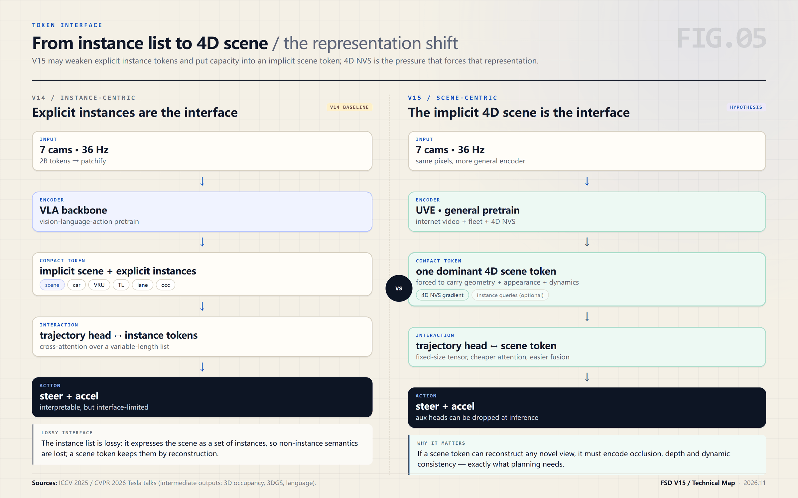
V14: instances were the interface, and a lossy one
- Explicit instances are interpretable, easy to supervise, easy to wrap in safety rules, and easy to visualize.
- But the list is lossy: it represents the scene as a set of instances, so non-instance semantics are not fully preserved.
- The scene token is trained for reconstruction and is lossless in that reconstruction.
- The list is also variable-length: different scenes have different numbers of cars, people, and lights.
- Cross-attending over it makes the compute graph scene-dependent, which is bad for deterministic latency.
V15: the scene is the interface, instances are queries
- V15 uses a fixed-size 4D scene token as the primary interface, with instances becoming optional heads queried from that token.
- Three direct benefits:
- Denser representation: 4D NVS forces the scene token to encode geometry, appearance, and dynamics. Planning gets a queryable world, not an object list.
- More stable compute: fixed-size tensors make attention cheaper and latency more predictable; no variable-length list.
- Prunable inference: auxiliary heads (perception, language, visualization) can be turned off or run at a lower rate on the car, leaving the main line and renderer.
“Weaken instances” is not “delete instances”
- The rigorous phrasing is: instances move from “interface” to “query.” Training still needs instance supervision (detection, tracking, segmentation, occupancy), or safety validation fails.
- But those heads can decode from the scene token rather than acting as a separate token set for planning.
- At inference, they can be pruned or run asynchronously.
- This yields an observable prediction: V15's visualization should show fewer traditional boxes/icons and more dense, generative scenes.
- That does not mean perception heads vanished; it means they no longer sit at the center of the planning interface.
- A fixed-size scene token plus direct cross-attention is easier to kernel-fuse, cache, and make deterministic than a variable-length instance list with multi-stage fusion.
- The renderer can also be scheduled on spare compute—precisely the premise behind “½ TRIP.”
Four task sets: dense world, sparse world, planner, language
- 4D dense world: 4D video prediction is the basic task; NVS, 3DGS, depth, reconstruction, and rendering are dense-WM sub-tasks.
- 4D sparse world: the AD perception task set.
- planner: multi-modal trajectory prediction, agent prediction, and related sub-tasks.
- language: scene-understanding captions, caption-based style transfer, pose as language, and instance inpainting as language.
The four task sets are not switched by task prompts; they are all trained as default tasks.

How the four task sets divide work
4D video prediction
- 4D video prediction is the basic large task in this set; NVS, 3DGS, depth, reconstruction, and rendering are dense-WM sub-tasks under it.
- It is not a V15 invention; general VLM/video models already have similar capabilities.
AD perception
- Object detection, tracking, occupancy (occ), segmentation (seg), traffic light detection (TLD), depth/flow, and related tasks form the sparse-world task set.
- It is the most mature supervision source and the sparse interface between dense world and planner.
Planner
- The planner task set contains multi-modal trajectory prediction, agent prediction, and related interaction/RL/closed-loop sub-tasks.
- It ultimately changes driving behavior.
Language
- Scene-understanding captions, caption-based style transfer, pose as language, and instance inpainting as language.
- It interacts with dense, sparse, and planner: editing and style for dense, semantics for sparse, commands and explanations for planner.
- Language is its own task set, not a bypass.
- It supplies both conditions and supervision: captions for scene understanding and retrieval, style transfer for appearance, pose as language for viewpoint commands, and instance inpainting for language-driven editing.
- All four sets share the same 4D scene token.
- Pose as language is a viewpoint-command task; the NVS camera pose is still encoded as a pose token, not as text.
One clip, four task sets
- Putting four task sets in one training run only works if data-task pairing is fine-grained.
- One 90-second-plus raw clip can yield:
| Supervision | Source | Label / condition | Purpose |
|---|---|---|---|
| 4D video prediction | Fleet clip + internet video | Future frames, time offset, scene evolution | Basic large task of the 4D dense world set |
| NVS / 3DGS / depth | Fleet clip + 3DGS reconstruction | Novel camera pose, RGB/depth/seg | Dense-WM sub-tasks inside the 4D dense world set |
| 4D sparse world | Fleet clip + auto/human labels | object det, tracking, occ, seg, TLD, depth/flow | AD perception task set; safety and distillation supervision |
| Planner | Human trajectories + simulation | Multi-modal futures, agent interaction, reward, interventions | planner task set: multi-modal trajectory prediction + agent prediction |
| Language | VLM captions + human review + command/edit data | Captions, style prompts, pose instructions, inpainting masks | Fourth task set; interacts with dense, sparse, and planner |
Training framework: data engine → general VLM/world-model pretraining → three-task-set pretraining → distillation deployment → data feedback.
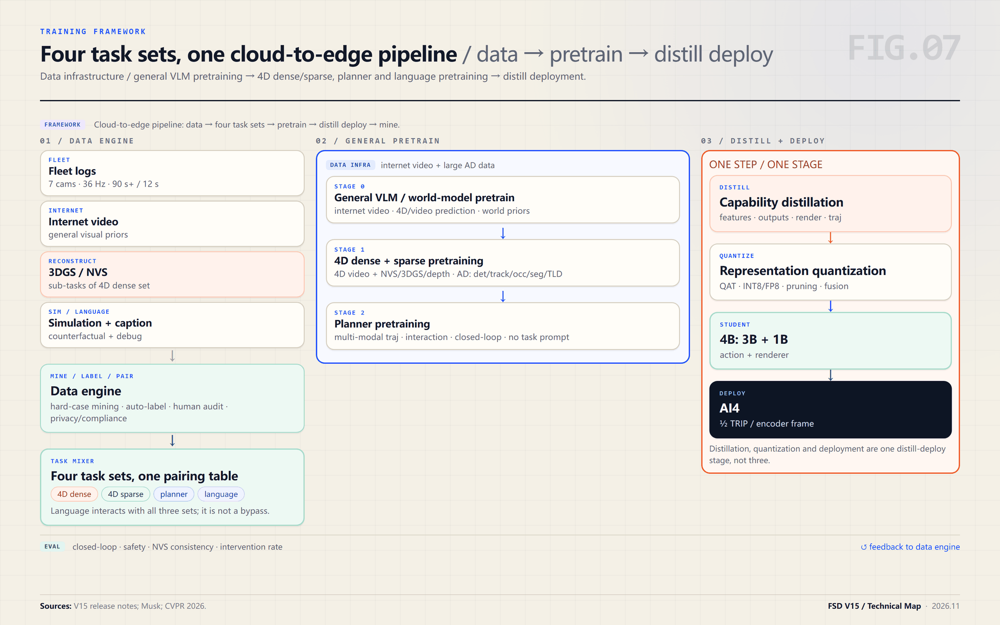
Order and weights
Four stages: general VLM/world-model warm-up → 4D dense + sparse → planner → distillation deployment.

The order is not fixed. It can follow the sequence above, or mix all stages and only tune weights.
Whether SFT remains a separate stage is open. Pretraining may already cover the stretch that used to be SFT.
Difficulties
- The four task sets compete for capacity: 4D dense consumes decoder compute, sparse world pulls resolution up, and planner demands low latency.
- The real difficulty is balance and evaluation: if NVS metrics rise but planning metrics do not, it remains an auxiliary task.
- However the tasks are merged, the planner is what ultimately changes driving behavior. 4D dense world is basic/auxiliary; 4D sparse world is the perception interface.
- The scorecard is still intervention rate, comfort, progress, and closed-loop safety—not rendering quality.
Post-training becomes close loop training inside pretraining
Speculation V15 may have folded post-training into pretraining; after the merge, this stage is called close loop training. Whether it holds is uncertain.
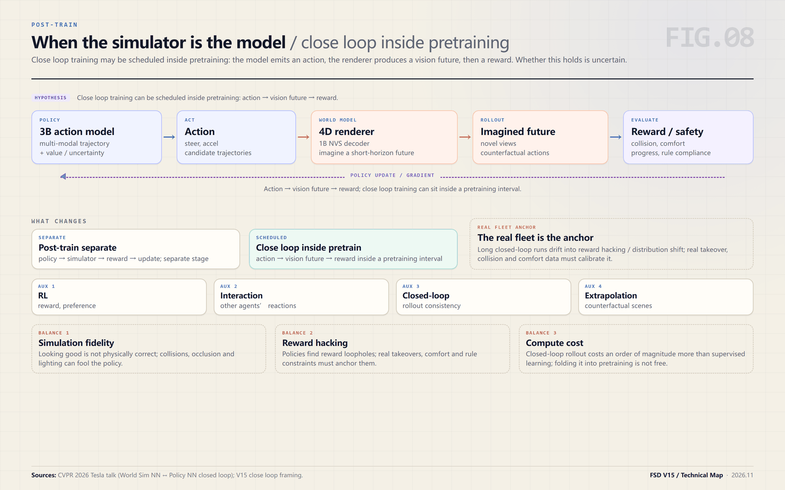
Why V14's post-training was separate
- The simulator and the policy were two different things.
- The policy learned from real data, then ran RL/closed-loop evaluation in a simulator.
- The simulator generated states; the policy generated actions; the two exchanged data through an interface.
- That interface was both an engineering boundary and an organizational one.
V15: counterfactual action capability
The V15 4D renderer has counterfactual action capability: given “what if the ego turns left here,” it generates a physically plausible, temporally consistent future.
It is therefore the carrier for post-training, not a replay of seen trajectories.
Close loop training: the name after the merge
- Post-training is the original name.
- After it moves into pretraining, the stage is called close loop training.
- Data and objective are not different: both are driving data and trajectory/action supervision.
- The difference is scheduling: insert close loop training into a pretraining interval, where the model outputs an action, the renderer produces the vision future, and reward is computed.
The question is not whether post-training has data or loss, but whether it is still scheduled separately.
If this speculation holds, post-training is completed inside pretraining, renamed close loop training, and no longer a separate stage.
The balance of close loop training
Fidelity vs coverage
Rendering must be physically correct, not just good-looking; collisions, occlusion, lighting, and other agents' reactions all affect the policy.
Reward signal vs reward hacking
Reward must move the policy while real interventions, collisions, comfort, and rules anchor it.
Closed-loop vs real distribution
A long closed loop drifts into model-generated states; the real fleet must recalibrate continuously.
Compute cost vs loop length
Closed-loop rollout is an order of magnitude more expensive; moving it into pretraining changes the bill, not the cost.
Distillation deployment: one step, not two stages
- Distillation and deployment may be one step, called distillation deployment.
- This note accepts that: moving cloud capability into a 4B on-car graph—distillation, quantization, pruning, operator fusion, latency engineering—is one process, not “distill first, deploy later.”

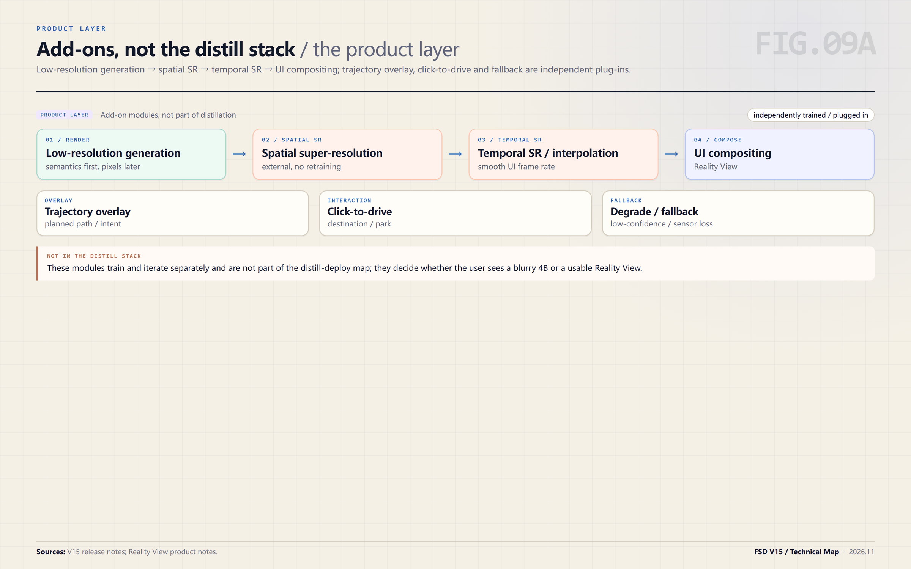
A deep DiT at low resolution
- V15's DiT stack is deep, but the output resolution is modest; spatial SR and temporal SR are external add-ons.
- Capacity goes to semantics and temporal consistency; pixel detail goes to the product layer.
- Semantics first: scene understanding, occlusion, dynamics need depth;
- Pixels later: UI resolution can be upscaled spatially; frame rate can be filled temporally;
- Compute under control: generate low-res + external SR is cheaper than end-to-end high-res, and easier to make deterministic.
- These are engineering add-ons that do not change training, but they decide whether users see “a blurry 4B” or something usable.
- Product differences often live here.
What distillation deployment includes
If V15's path is “general pretraining → on-car distillation deployment,” the step includes at least three layers:
- Capability/representation: Universal Vision Encoder (UVE) and scene-token intermediates, so the student learns how the teacher sees the world;
- Task structure: weights over the four task sets, data-task pairing, training order;
- Deployment: quantization, pruning, operator fusion, deterministic latency.
- Therefore, reusing the pretrain task/data mix matters: distillation deployment does not teach a 4B student from scratch; it makes the student imitate the cloud model inside a validated task distribution.
- How large the cloud model is, whether it is Grok, whether it is 10B—none of that is public enough to conclude here.
Capability distillation
- Cloud → student: features, logits, rendering, trajectory, uncertainty.
- Goal: the same tasks, not fewer parameters.
Representation quantization
- FP32 → FP16/INT8/FP8, QAT (Quantization-Aware Training), pruning, operator fusion.
- Goal: the same capability at lower bandwidth/power.
Four product-layer add-ons
- Spatial SR: upscale low-res rendering to UI resolution;
- Temporal SR / frame interpolation: smooth chunk boundaries and preserve a 36 fps feel;
- Occlusion fill: plausible inference in camera blind spots, not replay;
- UI compositing and fallback: trajectory arrows, clickable targets, map overlay; safe fallback if rendering fails.
- These do not change training, but they change the product.
- They are also part of why Tesla got there first: not algorithm alone, but algorithm + chip + cockpit + product team tuning together.
Industry impact: the bottleneck moves to cloud and distillation deployment
Under that view, competition shifts from “does a company have an end-to-end model?” to two questions: access to a strong enough general model, and the ability to distill and deploy it on the car reliably.

What RMB 200M/month buys
- “RMB 200M/month” is an industry order-of-magnitude estimate, not an accounting line or an industry standard.
- It roughly corresponds to four cost buckets:
Compute
- Depreciation or rental of a thousand-to-ten-thousand-GPU cluster, networking, storage, training frameworks, fault tolerance.
- Pretraining bills live here.
Data and labeling
- Fleet upload, cleaning, auto-labeling, human audit, 3DGS reconstruction, synthetic scenes.
- The data engine is easy to underestimate.
Talent
Foundation-model pretraining, world models, driving planning, chip co-design, evaluation—a cross-disciplinary team that can work together.
Evaluation and closed loop
- Neural simulators, closed-loop RL, safety validation, regulatory dialogue.
- Without evaluation, pretraining is “bigger,” not necessarily “better.”
Three routes
- Route A: full-stack general pretraining. Own the foundation model, VLA, world model, and distillation deployment pipeline.
- Highest ceiling, highest fixed cost.
- Tesla is the reference; Huawei or Xiaomi could qualify if they truly merge their foundation models with VLA.
- But “having a model” is not the same as “having driving data, safety validation, and organizational coordination.”
- Route B: borrow a model + SFT + distillation deployment. Use an external LLM/VLM/world model, replace full pretraining with SFT, then distill/quantize.
- This is the more realistic move for most Chinese automakers and embodied-AI companies: no need to rebuild pretraining infrastructure; get the distillation deployment pipeline working first.
- The price is model dependence, licensing/compliance risk, and a ceiling set by someone else.
- Route C: vertical data/scenarios. Regional data, long-tail scenes, regulatory relationships, cost control.
- This still creates an advantage in limited L4 scenarios/cities; but if the foundation-model gap widens, the value of that advantage falls.
NIO, XPeng, Li Auto, Huawei, Xiaomi: direction and investment
- The “big three” are NIO, XPeng, and Li Auto.
- All three are moving toward general pretraining plus an on-car closed loop, and have invested heavily: XPeng signals end-to-end/VLA, NIO has a new-generation stack, and Li Auto combines pretraining with production closed loops and world models.
- The direction is right; whether each succeeds is uncertain, but all are pushing toward FSD V15.
- The potential advantage for Huawei and Xiaomi is the combination of their own foundation model + their own cars/chips/channels.
- If they can combine a general model with VLA and reuse a cloud training/distillation deployment pipeline, it will pressure companies that only do driving algorithms.
- But the hard part is not only the model; it is the driving data loop, functional safety, organizational coordination, and regulation.
- If any link fails, it looks formidable and lands slowly.
Conclusion: borrowing a big model + SFT instead of full pretraining + distillation deployment is the fastest next-quarter path for some companies.
- For most companies, the realistic strategy is not “chase a RMB 200M/month pretrain,” but “pick a strong enough foundation model, push SFT and distillation deployment to the limit, and defend the scene with vertical data.” This widens the ceiling gap with Tesla, but gets a product out first.
- The risk: when competitors use general world models for zero-shot long-tail, the marginal value of vertical data falls.
Key metrics to watch
Key metrics to watch over the next one to two quarters:

| # | Metric | If not |
|---|---|---|
| 01 | Universal Vision Encoder (UVE) / 18 Hz provenance | No matching official document. |
| 02 | 4B / Grok scale | Scope changes; recompute. |
| 03 | Is NVS only auxiliary to 4D video prediction? | NVS is a primary task or product feature, not auxiliary. |
| 04 | Is there a cloud-to-edge pipeline? | The cloud and car are two different models. |
| 05 | 25× baseline and third-party data | The improvement is smaller; V15 is overestimated. |
| 06 | Do Chinese players ship distillation deployment? | They still train full pretraining, or routes diverge. |
| 07 | Do Huawei/Xiaomi merge foundation models with VLA? | Organization, data, and safety barriers are harder than the model. |
A structural shift
- General-model capability and distillation deployment become the main axis;
- driving-specific pretraining matters less on its own;
- companies without access to a strong model or a distillation deployment pipeline fall behind faster.
An experience upgrade
- Reality View is impressive, but the driving gains are limited;
- the industry returns to data loops, cost, and safety validation;
- the general-pretrain narrative cools.
How FSD V15 changes VLA and WAM
- WAM S01 belongs to embodied-AI discussion, not to FSD's module names.
- It is used here only as an analogy.
Impact on VLA
- VLA connects vision/language to action.
- V15's general VLM pretraining, default-task training, and 4D scene token let the VLA action head read the shared representation directly.
- With the task prompt removed, action no longer depends on task switching, and the model is more compact.
VLA is therefore strengthened: language/visual intent, world representation, and trajectory output sit in one forward pass, and the planner does not need a separate “task router.”
Impact on WAM
- WAM assumes a world model can support action evaluation and rollout.
- FSD V15 does not put that world model on the car: the on-car 1B NVS renderer does short-horizon prediction and differential generation, not continuous rollout.
- FSD therefore splits the “world model” into three parts: world representation in general pretraining, short-horizon NVS on the car, and the planner's trajectory and safety.
- Full WAM rollout stays in the cloud and does not enter the on-car control loop.
Comparison
| VLA | WAM | |
|---|---|---|
| FSD counterpart | VLM/VLA pretraining + planner | On-car short-horizon NVS + planner |
| V15's impact | The action head reads the shared representation directly; stronger | Online rollout is limited; the world model stays in the cloud |
| Result | VLA becomes the main line | WAM becomes an analogy and a cloud capability |
Glossary
Names and numbers
| Name / number | Source and confidence | What it means, and where it is misread |
|---|---|---|
| Universal Vision Encoder (UVE) | Musk | Universal Vision Encoder: a general vision encoder that compresses continuous camera frames into features, shared across FSD, Robotaxi, and Optimus. The release notes say only “vision encoder,” not the full name. |
| 18 Hz | Musk | The Universal Vision Encoder (UVE) feature rate, not the camera frame rate and not the final display frame rate. |
| 3B + 1B / 4B | Musk | About 3B for the driving-action model plus about 1B for the renderer, roughly 4B, as the on-car inference graph. |
| 10B | Media report | Some media say V15 grew from ~1B to ~10B, without defining the scope, and it conflicts with Musk's 3B+1B. This note treats it as a media number with no clear scope, not as the teacher model, and does not conflate it with Grok. |
| Grok | Open | Grok is a different order of general model, far larger than 10B. One open hypothesis is that Universal Vision Encoder (UVE) is itself part of Grok, possibly after multi-stage distillation; public information does not specify how it participates. |
| 25× critical intervention rate | Official framing | It is the improvement in “critical intervention rate” versus V14, not “25× safer,” and not “25% better.” Tesla has not published the V14 baseline or a full definition. |
| ½ TRIP compute | Musk's claim | Half of one TRIP accelerator, not half of an AI4 chip. |
| HW4 only | Official | V15 runs on AI4/HW4; HW3 stays on the v14 Lite branch. |
Where the numbers come from: Universal Vision Encoder (UVE), 18 Hz, 3B+1B, 36 fps target, and ½ TRIP come from a Sina relay of Musk's posts (2026-11-22); 10B comes from a TechWeb report (2026-11-23); 25× comes from Sohu/Global Times coverage of the release notes (2026-11-22); HW4 support comes from the same coverage.
Universal Vision Encoder (UVE)
- Universal Vision Encoder.
- Shared by FSD, Robotaxi, and Optimus in V15; emits features at 18 Hz.
- Source: Musk.
VLA
- Vision-Language-Action.
- A paradigm with vision as input, language as intermediate/output, and action as the target.
World-Action Model. A world-model-centric paradigm with action as output; converging with VLA.
NVS
- Novel View Synthesis.
- Render a scene from a new camera pose; 4D NVS also requires temporal consistency.
3DGS
- 3D Gaussian Splatting.
- Represent a scene with many Gaussian ellipsoids; differentiable, fast, supports dynamic objects.
DiT
Diffusion Transformer. A Transformer backbone for diffusion/flow-matching denoising.
Task prompt
- A text/condition mechanism that specifies the current task.
- V15 pretraining removes it and trains all tasks as default.
Mean-flow
- A flow-matching variant that learns an average velocity field over an interval;
- fewer NFEs, better for low-latency car deployment.
Compact token
- The intermediate interface in V14/V15.
- V14: implicit scene + explicit instances; V15: more 4D-scene-centric.
SFT
Supervised Fine-Tuning on high-quality driving data.
RL / closed loop
- Reinforcement learning and closed-loop evaluation.
- Roll out in simulation/world model, optimize with reward and safety constraints.
Distillation
Transferring a large teacher's capability (features, outputs, task structure) into a smaller student.
QAT / quantization
- Quantization-Aware Training.
- Simulate low precision during training, deploy as INT8/FP8 to cut bandwidth/power.
TRIP
- A neural-network accelerator block in Tesla's AI4 chip.
- Reality View uses “half a TRIP,” not half an AI4.
MPCI
Miles Per Critical Intervention. V15's 25× refers to this metric relative to V14.
Sources and notes
Main sources
- Tesla FSD V15 rollout and release notes, Sohu/Global Times, 2026-11-22: link
- Reality View, generative rendering, and compute, ZOL, 2026-11-23: link
- FSD V15 vision encoder / Reality View teardown, OFweek, 2026-11-23: link
- Relay of Musk's posts: UVE full name (Universal Vision Encoder), 18 Hz, 3B/1B, 36 fps target, ½ TRIP, Sina/Weibo, 2026-11-22: link
- Tesla CVPR 2026 talk (general robotics foundation model, intermediate outputs, World Sim NN), OFweek, 2026-06-05: link
- Tesla ICCV 2025 talk analysis (2B tokens, 3DGS, language reasoning), Woshipm, 2025-12-22: link
- Public-post teardown of UVE / 3B / 1B distillation, 18 Hz, Weibo, 2026-11-22: link
- Musk reply on “3B + 1B” (screenshot) and discussion, Weibo, 2026-11-22: link
- V15 “10B / 25× / architecture rebuild” report, TechWeb, 2026-11-23: link
- V14.3.5 unified model and Robotaxi→HW4 distillation report, News18a, 2026-07-21: link
- FSD V15 reaction and 25× / industry analysis, Sohu Auto, 2026-11-23: link
On 10B: item 8 is a media number that conflicts with Musk's 3B+1B. Treat it as a media number, not as the teacher model. Grok 5 is about 1.5 trillion parameters.
How the 11 theses were handled
- These 11 claims no longer have a standalone section.
- They sit in Appendix A at the end, each with an evidence level.
- Conflicts with public information (e.g., “Grok directly co-trains,” “10B vs 4B”) are separated by scope; claims without public evidence (e.g., “remove SFT,” “weaken instance tokens,” “external SR”) are marked as inference with falsifiable checks.
Citation and updates
Cite as: A Narrow View of FSD V15, 2026-11-23, v1.2.
Version: v1.3 · 2026-11-23 · Chinese/English · 14 figures · single-file HTML.
Disclaimer: Not investment advice. Company/route judgments are the author's analysis, not any company's official position.
Appendix: the 11 theses, audited
The 11 claims are listed below with an assessment and section references.
| # | Claim | Conclusion | Note |
|---|---|---|---|
| 01 | Grok trains with FSD; V14's VLA pretrain becomes V15's general pretrain | Stands | UVE is distilled from Grok through multiple stages and shared across FSD/Robotaxi/Optimus. See §04. |
| 02 | SFT still uses driving data | Stands | V15 continues to use fleet driving data. See §04. |
| 03 | 4D video gets more weight; the on-car NVS renderer generates novel views; data is reconstructed along the trajectory | Stands | 4D video is basic; NVS is a sub-task in 4D dense. See §05. |
| 04 | V15 may remove SFT and use pretraining only | Stands | The training pipeline is organized by four task sets, with no separate SFT stage. See §07. |
| 05 | Compact token = implicit scene + explicit instance; V15 weakens instances | Stands | The implicit 4D scene token is primary; explicit tokens are optional. See §06. |
| 06 | Traj head barely changes; scene-token interaction accelerates; auxiliary heads can be removed at inference | Stands | The trajectory head reads the scene token directly; auxiliary heads are prunable. See §06. |
| 07 | Merge tasks into four families: dense VLM/4D generation, perception, planner | Revised to four task sets | 4D dense, 4D sparse, planner, language. See §07. |
| 08 | Post-training folds into pretraining and is renamed close loop training (speculation) | Speculation | The difference is scheduling: action → vision future → reward; whether it holds is uncertain. See §08. |
| 09 | 3+1B: 3B backbone, 1B NVS decoder; SR is an add-on | Stands | 3B + 1B = 4B; Grok 5 is about 1.5T parameters. See §09. |
| 10 | Paradigm moves from pretrain→SFT→post-train to pretrain→distillation; big model to 4B | Stands | Distillation deployment is one step. See §09. |
| 11 | Few Chinese companies can spend RMB 200M/month on pretraining; NIO/XPeng/Li Auto, Huawei/Xiaomi; VLA becomes the main line; borrow model + SFT + distillation | Industry judgment | RMB 200M/month is an order-of-magnitude reference; company positions are illustrative. See §10. |